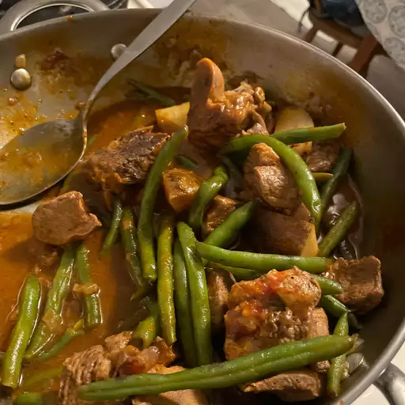

Lamb Stew

Description
A recipe for a Greek style lamb stew that can be made with either fresh or frozen green beans
Ingredients
- 3 tablespoons olive oil
- 1 large onion, chopped
- 1 stalk celery, chopped
- 3 pounds boneless lamb shoulder, cut into 2 inch pieces
- 1 (8 ounce) can tomato sauce
- 3 cups hot water
- 2 pounds fresh green beans, trimmed
- 1 tablespoon chopped fresh parsley
- ½ teaspoon dried mint
- ½ teaspoon dried dill weed
- 1 pinch ground cinnamon
- 1 pinch white sugar
- salt and pepper to taste